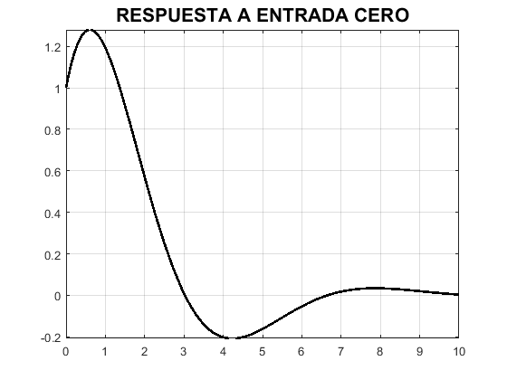
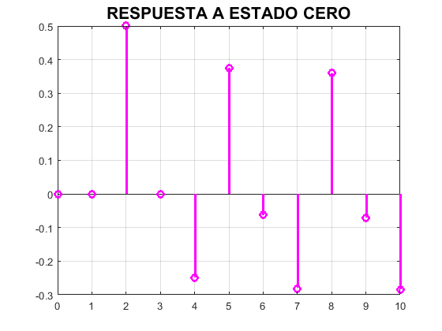

PRÁCTICA 06. SISTEMAS DIFERENCIALES Y EN DIFERENCIAS.
Contents
Integrantes
- Cuevas Morales Saúl Asís
- Gonzalez Zúñiga Alexis Bryan
- Méndez Pallares Josué
- Vallejo Camarillo Moisés Eduardo
Desarrollo
Problema 1. Para el siguiente sistema diferencial , con condiciones inicales y entrada . Realiza un programa con las siguientes características.
1.1. Muestra la función de transferencia del sistema.
El código usado para resolver este problema se encuentra en el sig. enlace: https://josuemp01.github.io/ASySPrac06JosueMendez/ftransfer.html
ftransfer([1 1 1],[1])
1 ---------- 2 D + D + 1
1.2. Muestra la respuesta al impulso (simbólico, gráfica).
El código usado para resolver este problema se encuentra en el sig. enlace: https://josuemp01.github.io/ASySPrac06JosueMendez/ftransfer.html
syms t
rimp([1 1 1],[1],[1 1],exp(-t)*heaviside(t),10)
RESPUESTA AL IMPULSO
=
/ t \ / sqrt(3) t \
sqrt(3) exp| - - | sin| --------- | 2
\ 2 / \ 2 /
-------------------------------------
3
1.3. Muestra la respuesta a entrada cero (simbólico, gráfica).
El código usado para resolver este problema se encuentra en el sig. enlace: https://josuemp01.github.io/ASySPrac06JosueMendez/ftransfer.html
syms t
entradacero([1 1 1],[1],[1 1],exp(-t)*heaviside(t),10)
RESPUESTA A ENTRADA CERO = / t \ / / sqrt(3) t \ / sqrt(3) t \ \ exp| - - | | cos| --------- | + sqrt(3) sin| --------- | | \ 2 / \ \ 2 / \ 2 / /
1.4. Muestra la respuesta a estado cero (simbólico, gráfica).
El código usado para resolver este problema se encuentra en el sig. enlace: https://josuemp01.github.io/ASySPrac06JosueMendez/ftransfer.html
syms t
estadocero([1 1 1],[1],[1 1],exp(-t)*heaviside(t),10)
RESPUESTA A ESTADO CERO
=
/ / sqrt(3) t \ \
| sqrt(3) sin| --------- | |
/ t \ | / sqrt(3) t \ \ 2 / |
exp(-t) - exp| - - | | cos| --------- | - ------------------------ |
\ 2 / \ \ 2 / 3 /
1.5. Muestra la respuesta total (simbólico, gráfica).
El código usado para resolver este problema se encuentra en el sig. enlace: https://josuemp01.github.io/ASySPrac06JosueMendez/ftransfer.html
syms t
total([1 1 1],[1],[1 1],exp(-t)*heaviside(t),10)
RESPUESTA TOTAL
=
/ t \ / / sqrt(3) t \ / sqrt(3) t \ \
exp(-t) + exp| - - | | cos| --------- | + sqrt(3) sin| --------- | |
\ 2 / \ \ 2 / \ 2 / /
/ / sqrt(3) t \ \
| sqrt(3) sin| --------- | |
/ t \ | / sqrt(3) t \ \ 2 / |
- exp| - - | | cos| --------- | - ------------------------ |
\ 2 / \ \ 2 / 3 /
1.6. La respuesta total al escalón con condiciones iniciales 0 (simbólico, gráfica).
El código usado para resolver este problema se encuentra en el sig. enlace: https://josuemp01.github.io/ASySPrac06JosueMendez/ftransfer.html
syms t
escalon([1 1 1],[1],[1 1],exp(-t)*heaviside(t),10)
RESPUESTA TOTAL AL ESCALON CON CONDICIONES INICIALES 0
=
/ / sqrt(3) t \ \
| sqrt(3) sin| --------- | |
/ t \ | / sqrt(3) t \ \ 2 / |
1 - exp| - - | | cos| --------- | + ------------------------ |
\ 2 / \ \ 2 / 3 /
1.7. Usando subplot, depliega una figura con 5 gráficas.
El código usado para resolver este problema se encuentra en el sig. enlace: https://josuemp01.github.io/ASySPrac06JosueMendez/ftransfer.html
syms t
graficas([1 1 1],[1],[1 1],exp(-t)*heaviside(t),10)
Problema 2. Para el sig. sistema en diferencias , con condiciones iniciales y con entrada . Realiza un programa con las siguientes características.
2.1. Muestra la función de transferencia del sistema.
El código usado para resolver este problema se encuentra en el sig. enlace: https://josuemp01.github.io/ASySPrac06JosueMendez/ftransfer.html
ftransferdif([1 1 1],[1])
FUNCION DE TRANSFERENCIA
1
----------
2
z + z + 1
2.2. Muestra la respuesta al impulso (simbólico, gráfica, ver KroneckerDelta).
El código usado para resolver este problema se encuentra en el sig. enlace: https://josuemp01.github.io/ASySPrac06JosueMendez/ftransfer.html
syms n
rimpdif([1 1 1],[1],[1 1],[0],(0.5^(n))*heaviside(n),10)
RESPUESTA AL IMPULSO
=
n / 1 sqrt(3) 1i \n - 1
(-1) sqrt(3) | - - ---------- | 1i
\ 2 2 /
kroneckerDelta(n, 0) + ----------------------------------------
3
n / sqrt(3) 1i 1 \n - 1
(-1) sqrt(3) | ---------- + - | 1i
\ 2 2 /
- ----------------------------------------
3
2.3. Muestra la respuesta a entrada cero (simbólico, gráfica).
El código usado para resolver este problema se encuentra en el sig. enlace: https://josuemp01.github.io/ASySPrac06JosueMendez/ftransfer.html
syms n
entradacerodif([1 1 1],[1],[1 1],[0],(0.5^(n))*heaviside(n),10)
RESPUESTA A ENTRADA CERO
=
n / pi n \ n / 1 sqrt(3) 1i \n - 1 n
- (-1) cos| ---- | 2 - (-1) sqrt(3) | - - ---------- | 1i + (-1)
\ 3 / \ 2 2 /
/ sqrt(3) 1i 1 \n - 1
sqrt(3) | ---------- + - | 1i
\ 2 2 /
2.4. Muestra la respuesta a estado cero (simbólico, gráfica).
El código usado para resolver este problema se encuentra en el sig. enlace: https://josuemp01.github.io/ASySPrac06JosueMendez/ftransfer.html
syms n
estadocerodif([1 1 1],[1],[1 1],[0],(0.5^(n))*heaviside(n),10)
RESPUESTA A ESTADO CERO
=
n / pi n \ / 1 \n
(-1) cos| ---- | 4 4 | - |
\ 3 / \ 2 / kroneckerDelta(n, 0)
------------------- + -------- - --------------------
7 7 2
n / 1 \n - 1 n / 1 \n - 1
(-1) sqrt(3) | - - #1 | 3i (-1) sqrt(3) | #1 + - | 3i
\ 2 / \ 2 /
+ -------------------------------- - --------------------------------
14 14
where
sqrt(3) 1i
#1 == ----------
2
 2.5. Muestra la respuesta total (simbólico, gráfica).
El código usado para resolver este problema se encuentra en el sig. enlace: https://josuemp01.github.io/ASySPrac06JosueMendez/ftransfer.html
syms n
totaldif([1 1 1],[1],[1 1],[0],(0.5^(n))*heaviside(n),10)
RESPUESTA TOTAL
=
/ 1 \n n / pi n \
4 | - | (-1) cos| ---- | 10
\ 2 / \ 3 / kroneckerDelta(n, 0)
-------- - -------------------- - --------------------
7 7 2
n / 1 \n - 1 n / 1 \n - 1
(-1) sqrt(3) | - - #1 | 11i (-1) sqrt(3) | #1 + - | 11i
\ 2 / \ 2 /
- --------------------------------- + ---------------------------------
14 14
where
sqrt(3) 1i
#1 == ----------
2
2.6. La respuesta total al escalón con condiciones iniciales 0 (simbólico, gráfica).
El código usado para resolver este problema se encuentra en el sig. enlace: https://josuemp01.github.io/ASySPrac06JosueMendez/ftransfer.html
syms n
escalondif([1 1 1],[1],[1 1],[0],(0.5^(n))*heaviside(n),10)
RESPUESTA TOTAL AL ESCALON CON CONDICIONES INICIALES 0
=
n / 1 \n - 1
(-1) sqrt(3) | - - #1 | 5i
1 kroneckerDelta(n, 0) \ 2 /
- - -------------------- - --------------------------------
3 2 6
n / 1 \n - 1 n / pi n \
(-1) sqrt(3) | #1 + - | 5i (-1) cos| ---- | 4
\ 2 / \ 3 /
+ -------------------------------- - -------------------
6 3
where
sqrt(3) 1i
#1 == ----------
2

2.7. Usando subplot, depliega una figura con 5 gráficas.
El código usado para resolver este problema se encuentra en el sig. enlace: https://josuemp01.github.io/ASySPrac06JosueMendez/ftransfer.html
syms n
graficasdif([1 1 1],[1],[1 1],[0],(0.5^(n))*heaviside(n),10)
Apéndices
Códigos otorgados por el profesor, de los cuales se obtuvieron los códigos que ayudaron a resolver los problemas 1 y 2.
Función "fourier2016a", código que resuelve ecuaciones diferenciales de orden n con la transformada de Fourier, el programa despliega: paso por paso la metodología de solución, la solución de la ecuación diferencial, y la gráfica tanto de la señal de entrada como de la señal de salida.
function fourier2016a(a,b,xi,t0) % a coeficientes de las derivadas de la salida menor a mayor [a_0, ..., a_n] % b coeficientes de las derivadas de la entrada menor a mayor [b_0, ..., b_m] % xi función de entrada en terminos de la variable simbolica t previamente % declarada en el command window % t0 tiempo final para graficar la solucion, la derivada, y la segunda % derivada % ejemplo: resolver y^(2)+2y^(1)+2y=x^(1)+2x con y^(1)(0)=0 % y(0)=0, x(0)=0, x(t)=exp(-t)u(t), para 5 segundos, se resuleve como % syms t % fourier2016a([2 2 1],[2 1],exp(-t)*heaviside(t),5) close all tam=size(a); tami=size(b); syms y(t) Y(w) x(t) X(w) Yy fp; syms edd edi edd=0; edi=0;
for i=1:tam(2) edd=edd+a(i)*(j*w)^(i-1)*Y(w); end
for i=1:tami(2) edi=edi+b(i)*(j*w)^(i-1)*X(w); end mensaje('APLICAMOS TRANSFORMADA DE FOURIER')
pretty(edd)
disp('=')
pretty(edi)
mensaje('SUBSTITUIMOS LA TRANSFORMADA DE LA ENTRADA')
edi=subs(edi,X(w), fourier(xi));
pretty(edd)
disp('=')
pretty(edi)
mensaje('DESPEJAMOS Y(w)')
edd=collect(edd,Y(w));
edd=subs(edd,Y(w),Yy);
eq1=edd==edi;
disp('Y(w)=')
edd=solve(eq1, Yy);
pretty(edd)
%%% Para versiones superiores a 2016 mensaje('DESARROLLAMOS LAS FRACCIONES PARCIALES DE Y(w)') disp('Y(w)=') pretty(partfrac(edd)) %%%% Si se ejecuta en 2015 o menor comentar las 3 lineas anteriores
mensaje('Aplicamos transformada inversa, asi la solución es') disp('y(t)=') y(t)=ifourier(edd,t); pretty(y(t))
figure (1) hFig = figure(1); set(hFig, 'Position', [0 0 900 900]) axes1 = axes('Parent',hFig,'FontWeight','bold','FontSize',16); tiempo=0:0.01:t0; fplot(xi,[0, t0],'b','LineWidth',2) hold on fplot(y,[0,t0],'r','LineWidth',2) legend('Entrada x(t)','Salida y(t)','Location','Best') xlabel('tiempo','FontWeight','bold','FontSize',16) title('Entrada y Respuesta del sistema','FontWeight','bold','FontSize',16) grid on end
function mensaje(texto) disp( ' ') disp(texto) disp( ' ') end
Función "laplace2016a", código que resuelve ecuaciones diferenciales de orden n con la transformada de Laplace y condiciones iniciales en 0 por la izquierda (cero menos)), el programa despliega: paso por paso la metodología de solución, la solución de la ecuación diferencial, y la gráfica tanto de la señal de entrada como de la señal de salida y una gráfica de la primera y segunda derivada de la salida.
function laplace2016a(a,b,ciy,xi,t0) % a coeficientes de las derivadas de la salida menor a mayor [a_0, ..., a_n] % b coeficientes de las derivadas de la entrada menor a mayor [b_0, ..., b_m] % ciy condiciones iniciales de la salida de menor a mayor [y(0), y(0)^(n-1)] % xi función de entrada en terminos de la variable simbolica t previamente % declarada en el command window % t0 tiempo final para graficar la solucion, la derivada, y la segunda % derivada % ejemplo: resolver y^(3)+y^(2)+2y^(1)+2y=3x^(2)-x^(1)+2x con y^(2)(0)=1 y^(1)=3 % y(0)=2, x(t)=exp(-t)cos(t)u(t), para 10 segundos, se resuleve como % syms t % laplace2016a([2 2 1 1],[2 -1 3],[2 3 1],exp(-t)*cos(t)*heaviside(t),10) close all tam=size(a); tami=size(b); syms y(t) Y(s) x(t) X(s) Yy fp; syms edd edi edd=0; edi=0;
for i=1:tam(2) edd=edd+a(i)*s^(i-1)*Y(s); for k=1:i-1 edd=edd-a(i)*(s^(i-1-k)*ciy(k)); end end
for i=1:tami(2) edi=edi+b(i)*s^(i-1)*X(s); %for k=1:i-1 % edi=edi-b(i)*(s^(i-1-k)*cix(k)); %end end mensaje('APLICAMOS TRANSFORMADA DE LAPLACE y subtituimos condiciones iniciales')
pretty(edd)
disp('=')
pretty(edi)
mensaje('SUBSTITUIMOS LA TRANSFORMADA DE LA ENTRADA')
edi=subs(edi,X(s), laplace(xi));
pretty(edd)
disp('=')
pretty(edi)
mensaje('DESPEJAMOS Y(s)')
edd=collect(edd,Y(s));
edd=subs(edd,Y(s),Yy);
eq1=edd==edi;
disp('Y(s)=')
edd=solve(eq1, Yy);
pretty(simplify(edd))
%%% Para versiones superiores a 2016 mensaje('DESARROLLAMOS LAS FRACCIONES PARCIALES DE Y(s)') disp('Y(s)=') pretty(partfrac(edd)) %%%% Si se ejecuta en 2015 o menor comentar las 3 lineas anteriores
mensaje('Aplicamos transformada inversa, asi la solución es') disp('y(t)=') y(t)=ilaplace(edd); pretty(y(t))
dy(t)=diff(y,t); ddy(t)=diff(dy,t); figure (1) hFig = figure(1); set(hFig, 'Position', [0 0 900 900]) axes1 = axes('Parent',hFig,'FontWeight','bold','FontSize',16); tiempo=0:0.01:t0; subplot(2,1,1) fplot(xi,[0, t0],'b','LineWidth',2)
hold on fplot(y,[0,t0],'r','LineWidth',2)
legend('Entrada x(t)','Salida y(t)','Location','Best') xlabel('tiempo','FontWeight','bold','FontSize',16) title('Entrada y Respuesta del sistema','FontWeight','bold','FontSize',16) grid on subplot(2,1,2) fplot(dy,[0,t0],'g','LineWidth',2)
hold on title('Primera y segunda derivada de la salida','FontWeight','bold','FontSize',16) fplot(ddy,[0,t0],'m','LineWidth',2)
legend('dy(t)/dt','d^2y(t)/d^2t','Location','Best') xlabel('tiempo','FontWeight','bold','FontSize',16) grid on end
function mensaje(texto) disp( ' ') disp(texto) disp( ' ') end
Función "zeta2016a", código que resuelve ecuaciones en diferencias de orden n en formato de adelanto mediante transformada Z y las condiciones iniciales se indican a partir de cero, el programa despliega: paso por paso la metodología de solución, la solución de la ecuación en diferecnias, y la gráfica tanto de la señal de entrada como de la señal de salida.
function zeta2016a(a,b,ciy,cix,xi,n0) % a coeficientes de las traslaciones de la salida mayor a menor [a_n, ..., a_0] % b coeficientes de las traslaciones de la entrada mayor a menor [b_m, ..., b_0] % ciy condiciones iniciales de la salida de mayor a menor [y(n-1), y(0)] % cix condiciones iniciales de la entrada de mayor a menor [x(m-1), x(0)] % xi funcion de entrada en terminos de la variable simbolica n previamente % declarada en el command window % n0 tiempo final para graficar la solucion, y la entrada % ejemplo: resolver %6y[n+2]+5y[n+1]+y[n]=x[n+1]+x[n] con y[1]=2 y[0]=1 %x[0]=0.5, x[n]=u[n], para 30 segundos, se resuleve como % syms n % zeta2016a([6 5 1],[ 1, 1],[2 1],[0.5],heaviside(n),30) close all tam=size(a); tami=size(b); syms y(n) n z Y(z) x(n) X(z) Yy fp; syms edd edi edd=0; edi=0;
for i=1:tam(2) yd(i)=y(n+tam(2)-i); edd=edd+ a(i)*ztrans(yd(i)); end
for i=1:tami(2) xd(i)=x(n+tami(2)-i); edi=edi+ b(i)*ztrans(xd(i)); end
mensaje('APLICAMOS TRANSFORMADA ZETA ') edd=subs(edd,ztrans(y(n),n,z), Y(z)); edi=subs(edi,ztrans(x(n),n,z), X(z)); pretty(edd) disp('=') pretty(edi) mensaje('SUBSTITUIMOS CONDICIONES INICIALES')
for j=1:tami(2)-1 edi=subs(edi,x(tami(2)-1-j),cix(j)); end
for j=1:tam(2)-1 edd=subs(edd,y(tam(2)-1-j),ciy(j)); end
pretty(edd)
disp('=')
pretty(edi)
mensaje('SUBSTITUIMOS LA TRANSFORMADA DE LA ENTRADA')
edi=subs(edi,X(z), ztrans(xi));
pretty(edd)
disp('=')
pretty(edi)
mensaje('DESPEJAMOS Y(z)')
edd=collect(edd,Y(z));
edd=subs(edd,Y(z),Yy);
eq1=edd==edi;
disp('Y(z)=')
edd=solve(eq1, Yy);
pretty(edd)
%%% Para versiones superiores a 2016 % mensaje('DESARROLLAMOS LAS FRACCIONES PARCIALES DE Y(z)') % disp('Y(z)=') % pretty(partfrac(edd)) %%%% Si se ejecuta en 2015 o menor comentar las 3 lineas anteriores
mensaje('Aplicamos transformada inversa, asi la solucion es') disp('y(n)=') y(n)=iztrans(edd); pretty(y(n))
figure (1) hFig = figure(1); set(hFig, 'Position', [0 0 900 900]) axes1 = axes('Parent',hFig,'FontWeight','bold','FontSize',16); tiempo=0:1:n0; stem(tiempo,subs(xi,n,tiempo),'b','LineWidth',2) hold on stem(tiempo,subs(y(n),n,tiempo),'r','LineWidth',2) legend('Entrada x[n]','Salida y[n]','Location','Best') xlabel('tiempo','FontWeight','bold','FontSize',16) title('Solucion de la ecuacion en diferencias ','FontWeight','bold','FontSize',16) grid on end
function mensaje(texto) disp( ' ') disp(texto) disp( ' ') end
Referencias
- Martínez Martínez Rafael. (2019). Práctica 6: Sistemas diferenciales y en diferencias. Github. Recuperado de: https://rafneta.github.io/PracticasSyS/20201/P06ASyS20201/P06ASyS20201.html.